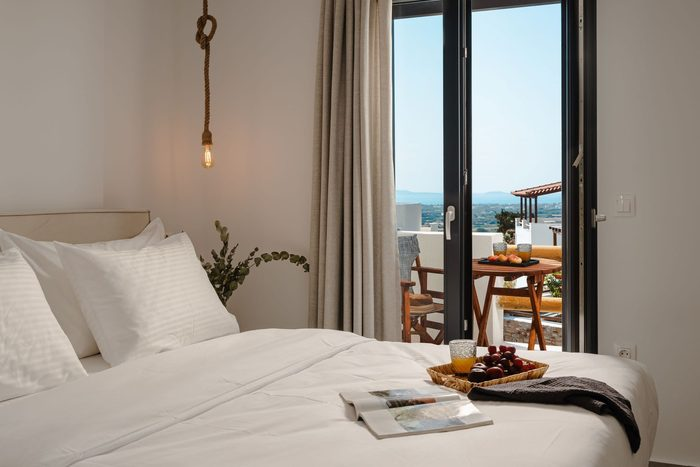
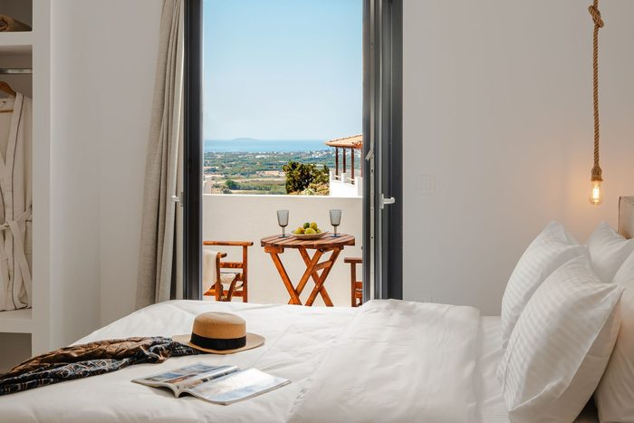

Naxos Balcony Apartments
Διαμονή με Θέα στο Γλινάδο
Απολαύστε την απόλυτη ηρεμία και το ομορφότερο ηλιοβασίλεμα της Νάξου
Καλώς ήρθατε
Καλώς ήρθατε στο Naxos Balcony Apartments, το δικό σας ησυχαστήριο στο γραφικό Γλινάδο της Νάξου. Τα πλήρως εξοπλισμένα δωμάτιά μας συνδυάζουν την παραδοσιακή κυκλαδίτικη φιλοξενία με σύγχρονες ανέσεις, προσφέροντας πανοραμική θέα στο Αιγαίο. Είναι η ιδανική επιλογή για όσους αναζητούν χαλάρωση και αυθεντικές διακοπές, μόλις μια ανάσα από την κοσμοπολίτικη Χώρα.
Η Νάξος & Το Γλινάδο
Ανακαλύψτε τη μαγεία του νησιού και την ηρεμία του παραδοσιακού χωριού μας
Γλινάδο Νάξου
- Παραδοσιακή τοποθεσία: Μόλις 5 λεπτά (5χλμ) από το λιμάνι και τη Χώρα της Νάξου
- Γαλήνη & Ηρεμία: Μακριά από τον τουριστικό θόρυβο, στην καρδιά της ναξιώτικης φύσης
- Πανέμορφη θέα: Πανοραμική ματιά στο Αιγαίο Πέλαγος, την Πάρο και τα γύρω νησιά.
- Ευκολία: Σε κοντινή απόσταση θα βρείτε Mini Market, φαρμακείο και στάση λεωφορείου για τις μετακινήσεις σας.
- Ορμητήριο: Η θέση του χωριού επιτρέπει την ταχύτατη πρόσβαση τόσο στις ακτές όσο και στην ορεινή Νάξο.
- Κοντινές παραλίες: Άγιος Προκόπιος (12'), Αγία Άννα (9'), Άγιος Γεώργιος (11'), Αλυκό (18'), Μικρή Βίγλα (20') και Χαβάη (15')
- Τοπική γεύση: Αυθεντικές ταβέρνες και ο παραδοσιακός φούρνος του χωριού με φρέσκα τοπικά προϊόντα
Αξιοθέατα Νάξου
- Πόρταρα: - Το εμβληματικό μαρμάρινο μνημείο (12 λεπτά 5,5 km)
- Κάστρο της Νάξου: - Μεσαιωνική πόλη (12 λεπτά)
- Χώρα Νάξου: - Παραδοσιακά σοκάκια και καταστήματα (περίπου 12 λεπτά)
- Παραλίες: Πλάκα, Άγιος Προκόπιος, Αγία Άννα, Μικρή Βίγλα, Αλυκό & Χαβάη (10-20 λεπτά)
- Ορεινή Νάξος: Τα γραφικά χωριά Απείρανθος, Φιλώτι, Κόρωνος (40'), και το Χαλκί (20') για το περίφημο λικέρ Κίτρο και παραδοσιακά γλυκά.
- Αρχαιολογικός Χώρος Ύρια: Ο εντυπωσιακός αρχαίος ναός του Διονύσου, μόλις 10 λεπτά από το κατάλυμα.
- Οι Κούροι της Νάξου: Επισκεφθείτε τα επιβλητικά αρχαία αγάλματα στις Μέλανες (15') και στον Απόλλωνα (53').
Δραστηριότητες & Εμπειρίες
- Θαλάσσια σπορ: windsurfing, kitesurfing, diving
- Φύση & Περιπέτεια: Ορεινές βόλτες, πεζοπορία σε αρχαία μονοπάτια και ποδηλασία βουνού
- Γαστρονομία: Γευσιγνωσία τοπικών προϊόντων, όπως η περίφημη Γραβιέρα Νάξου, οι διάσημες Πατάτες και το παραδοσιακό λικέρ Κίτρο.
- Οινογνωσία: Επισκεφθείτε τοπικά οινοποιεία για να δοκιμάσετε τις εκλεκτές ποικιλίες ναξιώτικου κρασιού και αποστάγματα.
- Παραδοσιακά πανηγύρια: Ζήστε την αυθεντική ναξιώτικη διασκέδαση με βιολιά και τοπικούς χορούς κατά τους καλοκαιρινούς μήνες.
- Ηλιοβασιλέματα: Μοναδικές στιγμές με θέα τον ήλιο να χάνεται στο Αιγαίο, απευθείας από το κατάλυμά μας.
- Ιστιοπλοΐα & Σκάφος: Ημερήσιες εκδρομές με ιστιοπλοϊκό ή ταχύπλοο στις Μικρές Κυκλάδες και σε δυσπρόσιτες παραλίες
Τα Δωμάτιά μας

Room 3 (26 τ.μ.)
Άνετο και αυτόνομο δωμάτιο 26 τ.μ., ιδανικό για 2 άτομα. Διαθέτει πλήρως εξοπλισμένη κουζίνα και ιδιωτικό μπαλκόνι για στιγμές χαλάρωσης σε μια ήσυχη γωνιά του συγκροτήματος.

Room 4 (26 τ.μ.)
Ευρύχωρο διαμέρισμα 26 τ.μ. που προσφέρει απόλυτη αυτονομία με πλήρη κουζίνα. Απολαύστε τον πρωινό σας καφέ στο ιδιωτικό μπαλκόνι με θέα το Αιγαίο και τη γαλήνη του ναξιώτικου τοπίου, σε μια εξαιρετική επιλογή για 2 άτομα που αναζητούν την τέλεια ισορροπία άνεσης και λειτουργικότητας.

Room 5 (23 τ.μ. - Η Καλύτερη Θέα)
Φωτεινό στούντιο 23 τ.μ. με προνομιακή θέση και πανοραμική, ανεμπόδιστη θέα στο Αιγαίο. Περιλαμβάνει πλήρως εξοπλισμένη κουζίνα, συνδυάζοντας την άνεση με το ομορφότερο ηλιοβασίλεμα του Γλινάδου.

Room 6 (26 τ.μ. - Η Καλύτερη Θέα)
Αυτόνομο διαμέρισμα 26 τ.μ. για 2 άτομα, που ξεχωρίζει για την εκπληκτική θέα στη θάλασσα. Με πλήρη εξοπλισμό κουζίνας και μεγάλους χώρους, αποτελεί το ιδανικό καταφύγιο για τις διακοπές σας.